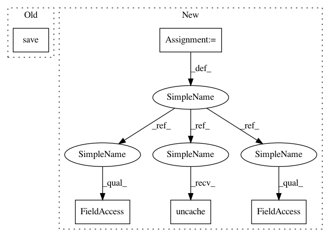

01d18e835815feedeac2fbeff8025cdd94128eaa,pynets/fmri/clustools.py,NilParcellate,create_clean_mask,#NilParcellate#,411
Before Change
self._clust_mask_corr = "%s%s%s%s" % (self._dir_path, "/", mask_name, ".nii")
self._clust_mask_corr_img = nib.Nifti1Image(self._mask_data, affine=self._clust_mask_img.affine,
header=self._clust_mask_img.header)
nib.save(self._clust_mask_corr_img, self._clust_mask_corr)
self._clust_mask_img.uncache()
del self._mask_data
gc.collect()
After Change
".nii.gz")
// Load clustering mask
func_vol_img = index_img(self._func_img, 1)
clust_mask_res_img = resample_img(nib.load(self.clust_mask), target_affine=func_vol_img.affine,
target_shape=func_vol_img.shape, interpolation="nearest")
if self._mask_img is not None:
mask_res_img = compute_gray_matter_mask(resample_img(self._mask_img, target_affine=func_vol_img.affine,
target_shape=func_vol_img.shape,
interpolation="nearest"))
self._clust_mask_corr_img = intersect_masks([math_img("img > 0", img=func_vol_img),
math_img("img > 0", img=clust_mask_res_img),
math_img("img > 0", img=mask_res_img)],
threshold=1, connected=False)
self._mask_img.uncache()
mask_res_img.uncache()
else:
self._clust_mask_corr_img = intersect_masks([math_img("img > 0", img=func_vol_img),
math_img("img > 0", img=clust_mask_res_img)],
threshold=1, connected=False)
nib.save(self._clust_mask_corr_img, "%s%s%s%s" % (self._dir_path, "/", mask_name, ".nii"))
func_vol_img.uncache()
clust_mask_res_img.uncache()
gc.collect()
return self.atlas
In pattern: SUPERPATTERN
Frequency: 3
Non-data size: 5
Instances
Project Name: dPys/PyNets
Commit Name: 01d18e835815feedeac2fbeff8025cdd94128eaa
Time: 2019-12-09
Author: dpisner@utexas.edu
File Name: pynets/fmri/clustools.py
Class Name: NilParcellate
Method Name: create_clean_mask
Project Name: dPys/PyNets
Commit Name: 52bdab14484a69594976e84afc70a0790f679588
Time: 2019-12-28
Author: dpisner@utexas.edu
File Name: pynets/registration/register.py
Class Name: FmriReg
Method Name: atlas2t1wmni_align
Project Name: dPys/PyNets
Commit Name: 52bdab14484a69594976e84afc70a0790f679588
Time: 2019-12-28
Author: dpisner@utexas.edu
File Name: pynets/registration/register.py
Class Name: DmriReg
Method Name: atlas2t1w2dwi_align
Project Name: dPys/PyNets
Commit Name: 01d18e835815feedeac2fbeff8025cdd94128eaa
Time: 2019-12-09
Author: dpisner@utexas.edu
File Name: pynets/fmri/clustools.py
Class Name: NilParcellate
Method Name: create_clean_mask